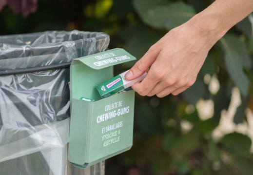

Stocke & Recycle
Stocke & Recycle is a set of two solutions intended to reduce chewing-gum waste.
Date
2021
My role
Service design
Product design
Duration
3 months
Team size
4 members

Using existing infrastructures allows cutting down costs and more flexibility.
view in AR Android east
view in AR iOS east
Chewing in data
5 years
is the time chewing-gum takes to degrade
2nd
France is the 2nd biggest country consuming chewing-gum in the world
64%
of the consumers are aged between 10 and 35 years old
The user journey

Storing the chewing-gum
The packaging allows users to stock the used chewing-gum.
The packaging has a double compartment system that allows the users to place the used chewing-gum inside of it. Using chewing-gums naturally creates space for used ones.
Chewing-gum being made out of 60% of sugar is much smaller once chewed.
Collecting the chewing-gum
A set of urban collectors to store the filled packaging
Urban collectors would be placed throughout the city, allowing people to throw away their Stocke & Recycle packaging, as well as making sure people that don’t have them can still throw away their chewing-gum, allowing it to be collected.
Incentivize the users
People can simply stick their used chewing-gum when passing by.
An urban collector with paper sheets incentivizes people passing by to stick their chewing-gum.
As the majority of people who chew gum are less than 30 years old, we wanted to attract this population by allowing them to vote for their favorite character.
More general posters have been made for the older users.
Paper is a good surface to ensure a good adhesion, and the collectors have a small roof to make sure no too much rain goes on top of them.

Maintenance can easily pull off the pieces of paper to collect the chewing-gum stucked on it.
This helps collecting the packaging as well.
Prototyping
Finding the right size
Carboard prototypes had been made in order to find the right proportions for the collectors and the posters, and making sure the writing were visible enough.
